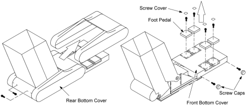
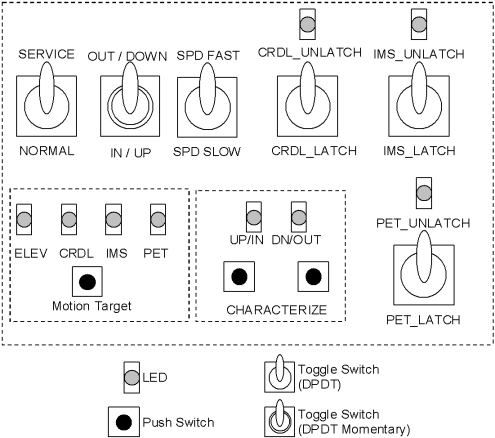
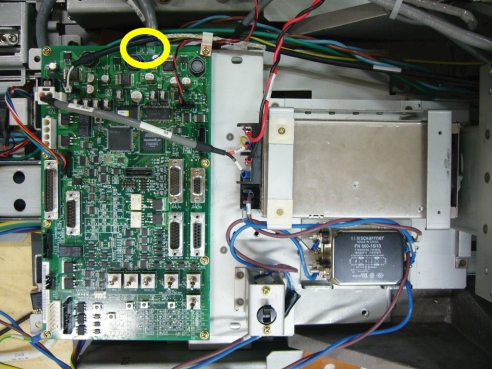
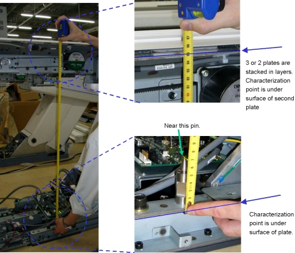
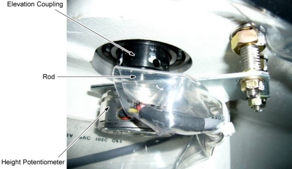

Operating Documentation
Direction 5181178-800, Rev# 16
BrightSpeed Select Service Methods Gen
Module Version 2.0, Version Date 1/14/08
Operating Documentation |
| Required Persons | Preliminary Reqs | Procedure | Finalization |
|---|---|---|---|
| 1 |
| Last Revised: | 16 March 2007 |
Move the cradle to the OUT limit position.
Remove power from Table by turning off “HVDC”, “120VAC” and “Axial Drive” switches on the service switch panel.
Move the front and rear bottom covers as follows:
Remove two screw caps from the rear bottom cover.
Unscrew two screws, and remove the rear bottom cover.
Remove four screw covers from the foot pedals.
Unscrew four Allen screws, and remove the four pedals.
Unscrew four screws, and remove the front bottom cover.
Illustration 1: Front and Rear Bottom Covers

Turn on the power of 120 VAC
Set the service switch (MODE_SEL) to the SERVICE to enter the service mode.
Confirm that the “ELEV” LED on the GTCB board lights up. If it doesn't light up, press the “Motion Target” button until “ELEV” LED is ON.
Illustration 2: LED's on GTCB

Press and hold the service switch (ACTION) to the IN/UP position to move the table to the mechanical UP-limit position.
Confirm that the “POT_ADJ UP” LED (Green) lights up. If it doesn't light up, perform Height Potentiometer Adjustment (refer to Height Potentiometer Adjustment).
Illustration 3: POT_ADJ UP LED

Press the two “Characterize” Buttons at the same time to start characterization.
Confirm that the “UP/IN” LED lights up.
Using the Service Switches, move the table at 950 +/- 0.5mm of the distance between characterization points as shown in illustration below.
Illustration 4: Characterization Points

Press the two “Characterize” Buttons at the same time.
Confirm that the “DOWN/OUT” LED is ON.
Using the Service Switch (ACTION), move the table at 650 ± 0.5mm of the distance between characterization points.
Press the two “Characterize” Buttons at the same time to start characterization.
Confirm that both of “UP/IN” LED and “DOWN/OUT” LED are ON.
Using the Service Switch, move the table to the mechanical down-limit position.
Press the two “Characterize” Buttons at the same time.
5 - 10 seconds later (to write characterization data to the flash memory), confirm that both of LED's (UP/IN and DOWN/OUT) are OFF.
If both of LED's blink during procedures, it means that characterization fails. Retry characterization.
When the Height Potentiometer (elevation potentiometer) is replaced or it must be adjusted again, perform this procedure.
Using the Service Switches, move the table to the mechanical UP-limit position.
Confirm that the “POT_ADJ UP” LED (Green) is ON. If it is NOT ON, adjust the height potentiometer as follows:
Remove the height potentiometer from the elevation coupling according to Height Potentiometer Replacement.
Rotate the rod of the height potentiometer to it's ClockWise limit, and then rotate back until “POT_ADJ UP” LED is ON.
Re-install the height potentiometer.
Confirm that the “POT_ADJ UP” LED is ON.
Illustration 5: Height Potentiometer

Using the Service Switches, move the table to the mechanical DOWN-limit position.
Confirm that the “POT_ADJ DOWN” LED (Yellow) is ON. If it is NOT ON, adjust the height potentiometer again.
Re-install the Table covers.